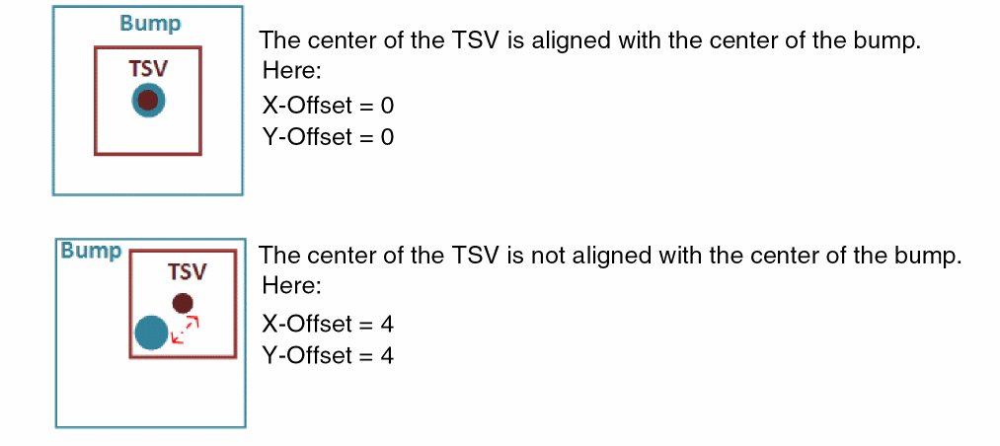

Creating Bumps and TSVs
In flip-chip dies, bumps and TSVs are used to establish connections between dies. Bumps connect individual dies, whereas TSVs cut through the silicon substrate to connect the top metal layer to the backside metal layer.
Bumps and TSVs are created at the die level. Before generating bumps and TSVs, ensure that the following definitions are in place:
-
Bump cellview: Create the required bump shape in a cellview. Set the cellview type as
coverBump. -
Vias: Define the required standard vias in the
viaDefssection of the technology file. For more information, see Specifying Via Definitions.
Using this information, you can generate bump arrays and TSVs on the required dies.
-
With the container or package layout open, launch the Edit-In-Concert mode by selecting Module – Edit-In-Concert.
The package design is displayed on the first tab, and the layouts of the die instances in the package are displayed on separate tabs. - Click the tab corresponding the die on which you want to create the bumps and TSVs.
-
Select Module – Bump Management – Create Bumps – Array to open the Create Bump and TSV form.
-
Specify the X and Y coordinates of the first bump of the array in the X-Origin and Y-Origin fields, respectively. The following image depicts how the pitch and origin values are applied.
- Specify the horizontal distance between the bump edges in the Horizontal Pitch field.
- Specify the vertical distance between the bump edges in the Vertical Pitch field.
- Specify the number of rows to be generated in the array in the No. of Rows field.
- Specify the number of columns to be generated in the array in the No. of Columns field.
- Specify the reference bump cell in the Library, Cell, and View fields in the Bump group box. Optionally, click Browse and select the cellview from the Library Browser.
- Click Apply.
A bump array as per your specifications is generated in the layout canvas.
- Select Create TSV.
-
Select a via from the Via Definition cyclic field. The Via Definition cyclic field lists all the standard and custom vias that are available in the technology file.
-
Specify the X and Y offsets for the TSVs. These values define the offset from the center of each TSV to the center of the corresponding bump.
 - Click OK or Apply.
TSVs as per your specifications are created on the active die.
Related Topics
- Create Bump and TSV Form (form reference)
Return to top